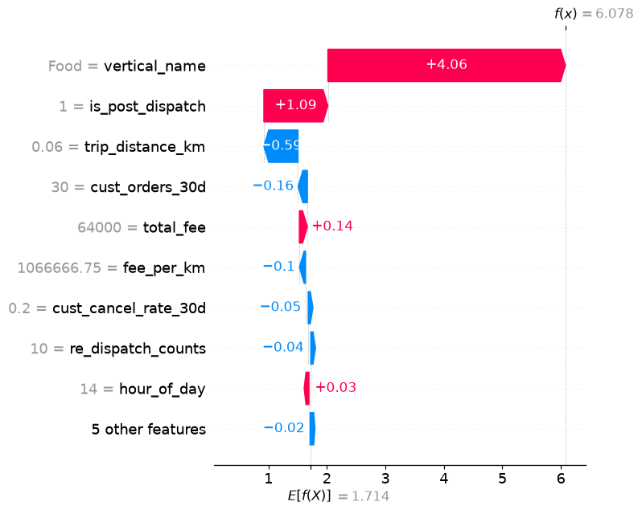
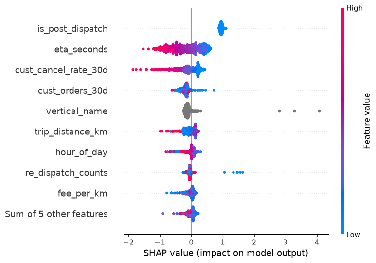
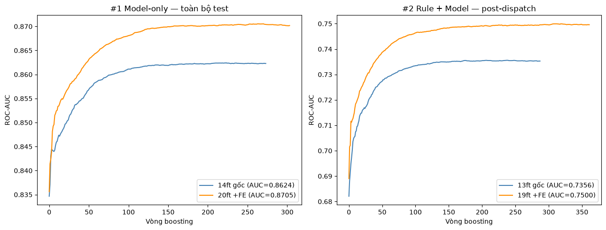
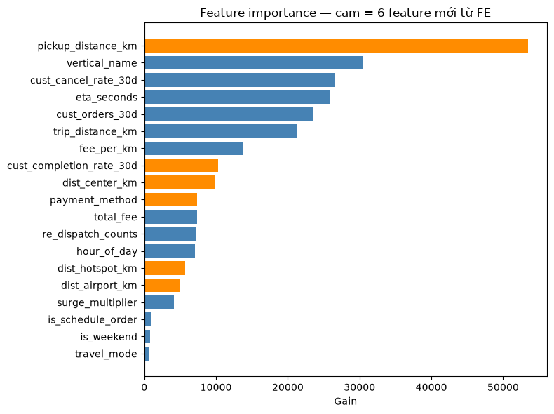
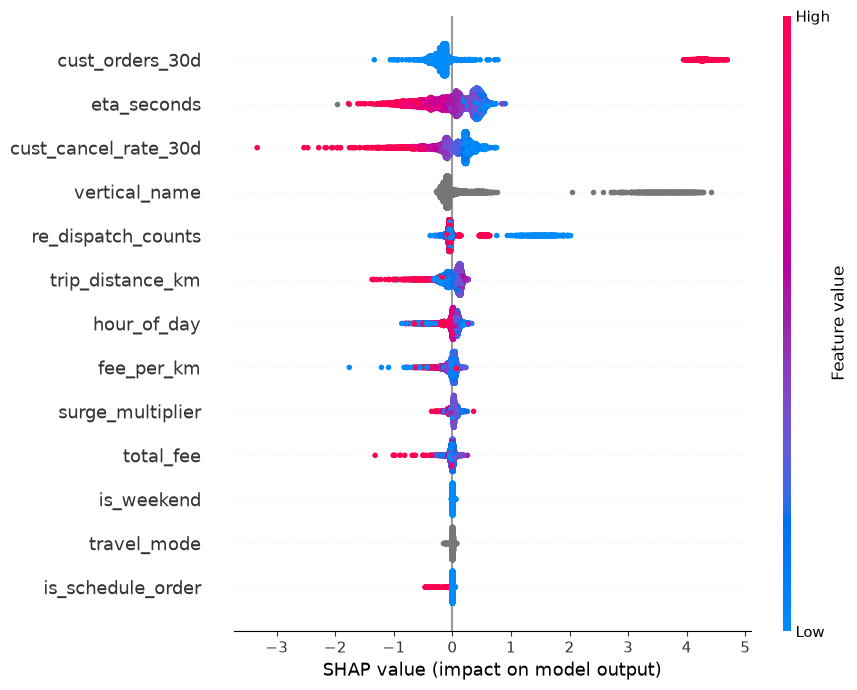
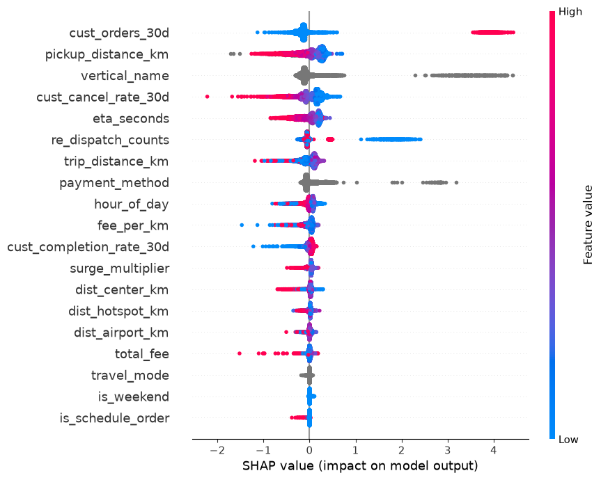

Từ mốc đóng băng Tuần 1 (ROC-AUC post-dispatch 0,7267): chẩn đoán lỗi theo segment (kèm SHAP), 28 thử nghiệm feature engineering, so sánh FAIR tách theo kiến trúc, và xử lý 2 sai lệch reproducibility.
| Dự án | Rider Cancellation (Matching & Dispatch) | Giai đoạn | Tuần 2 |
| Test set | 13/07/2026, n=8.609 (post-dispatch) | Trạng thái | ✓ Hoàn thành — 6 feature mới, baseline 20ft (sau đó 19ft) |
Xuyên suốt tuần này, mọi phân tích được chạy song song trên 2 cách xử lý is_post_dispatch — để trả lời câu hỏi: cờ này nên NẰM TRONG model hay tách ra làm rule?
| Kiến trúc | Mô tả |
|---|---|
| (A) Model-only | is_post_dispatch nằm trong model như 1 feature bình thường (14ft) — model train trên cả pre-dispatch lẫn post-dispatch. |
| (B) Rule + Model | is_post_dispatch bị bỏ khỏi model, chuyển thành 1 rule if/else bên ngoài: False → trả thẳng "huỷ"; True → mới qua model (13ft). Model chỉ train/infer trên post-dispatch. |
Kết luận sớm (giữ nguyên xuyên suốt): 2 kiến trúc cho kết quả gần như tương đương trên baseline gốc (chênh ±0,002) — tách is_post_dispatch ra rule là thay đổi an toàn, không mất chất lượng. Baseline production hiện tại dùng (B).
| Segment | n | Base rate | AUC (A) 14ft | AUC (B) 13ft | Δ (B−A) |
|---|---|---|---|---|---|
| Toàn bộ post-dispatch | 8.609 | 0,908 | 0,7352 | 0,7356 | +0,0004 |
| Khách mới ← yếu nhất | 745 | 0,891 | 0,7031 | 0,7010 | −0,0021 |
| Khách quen | 7.864 | 0,910 | 0,7379 | 0,7385 | +0,0006 |
| Giờ cao điểm | 3.272 | 0,903 | 0,7426 | 0,7424 | −0,0002 |
| Giờ thường | 5.337 | 0,911 | 0,7298 | 0,7303 | +0,0005 |
| ETA dài (>600s)* | 45 | 0,867 | 0,8419 | 0,8205 | −0,0214 |
| ETA ngắn (≤600s) | 8.264 | 0,908 | 0,7289 | 0,7293 | +0,0004 |
*Mẫu ETA dài quá nhỏ (45 dòng) — không đủ tin cậy thống kê. Khách mới là segment yếu nhất rõ rệt (AUC ~0,70, thấp hơn "Toàn bộ" gần 3,5 điểm AUC).
| Segment | Recall (A) | Recall (B) | Precision (A) | Precision (B) |
|---|---|---|---|---|
| Toàn bộ post-dispatch | 0,0227 | 0,0227 | 0,783 | 0,818 |
| Khách mới | 0,0123 | 0,0123 | 1,000 | 1,000 |
| Giờ thường | 0,0253 | 0,0274 | 0,750 | 0,813 |
Recall thấp ở mọi segment, nhưng khách mới đặc biệt tệ: recall chỉ 0,0123 (bắt được 1/81 đơn huỷ thực tế) — nguyên nhân gốc: threshold 0,5 quá cao so với base rate ~90–91% (đa số đơn ở segment nào cũng là "đi"), không phải khác biệt giữa 2 kiến trúc.
Tách 4 nhóm ở threshold 0,5 trên baseline v1 gốc (14ft) — xét cả 2 chiều lỗi trước khi xếp hạng feature, để candidate tìm được không vô tình gây hại chiều ngược lại.
| Nhóm | Định nghĩa | n | % |
|---|---|---|---|
| FN — huỷ, đoán sai (đoán sẽ đi) | y=huỷ, p≥0,5 | 775 | 97,8% |
| FP — đi, đoán sai (đoán sẽ huỷ) | y=đi, p<0,5 | 6 | 0,8% |
| TP — huỷ, bắt đúng | y=huỷ, p<0,5 | 17 | — |
| TN — đi, đoán đúng | y=đi, p≥0,5 | 7.811 | — |
FN áp đảo về khối lượng (775 vs 6, ~129:1). 6 đơn FP đều là chuyến giá cao, đường dài, khách có lịch sử huỷ cao — cùng hướng "rủi ro cao hơn" với FN, không mâu thuẫn nhau, nên bảng xếp hạng feature dưới đây an toàn để dùng.
| Cột | FN (median) | TP (median) | % lệch | Đã có trong baseline? |
|---|---|---|---|---|
| cust_cancel_rate_30d | 0,167 | 0,094 | 76,7% | ✅ Có sẵn |
| pickup_distance_km | 1,171 | 0,761 | 53,9% | ❌ Chưa — ứng viên #1 |
| eta_seconds | 248,95 | 197,44 | 26,1% | ✅ Có sẵn |
| trip_distance_km | 4,77 | 5,38 | 11,4% | ✅ Có sẵn |
| cust_completion_rate_30d | 0,786 | 0,857 | 8,3% | ❌ Chưa — ứng viên |
| dist_hotspot_km | 2,27 | 2,10 | 8,2% | ❌ Chưa — ứng viên |
| dist_center_km | 6,86 | 6,51 | 5,4% | ❌ Chưa — ứng viên |
| dist_airport_km | 23,41 | 23,06 | 1,6% | ❌ Chưa (lệch quá nhỏ) |
| Cột | Giá trị lệch nhiều nhất | FN % | TP % | Đã có? |
|---|---|---|---|---|
| payment_method | cash | 68,5% | 61,9% | ❌ Chưa — ứng viên |
| vertical_name | Bike | 48,8% | 38,6% | ✅ Có sẵn (chưa đủ mịn) |
Kết luận mục 2 — ứng viên ưu tiên cao nhất: pickup_distance_km (#1 numeric) và payment_method (#1 categorical). Đối chiếu với FP: không ứng viên nào có dấu hiệu "sửa FN thì hại FP".
SHAP (SHapley Additive exPlanations, TreeExplainer — chính xác tuyệt đối cho model dạng cây) phân rã mỗi dự đoán thành tổng đóng góp có dấu của từng feature so với 1 base value chung:


| Feature | SHAP TB — FN | SHAP TB — TP | Chênh lệch |
|---|---|---|---|
| cust_cancel_rate_30d | −0,1185 | −1,4808 | +1,3624 |
| cust_orders_30d | −0,1954 | −0,6087 | +0,4133 |
| eta_seconds | −0,1698 | −0,5323 | +0,3625 |
Phát hiện chính: cust_cancel_rate_30d có chênh SHAP lớn nhất giữa FN/TP — nhưng ngược trực giác: model bắt đúng (TP) chính xác vì gặp khách có lịch sử huỷ cực đoan; phần lớn đơn huỷ thật (FN) lại đến từ khách KHÔNG có lịch sử huỷ nổi bật, nên feature này "im lặng" đúng lúc cần nhất. Đây là lý do cần feature không phụ thuộc lịch sử khách (pickup_distance_km, payment_method, dist_center_km...). Kiểm định A/B (2 kiến trúc) cho cùng 1 câu chuyện SHAP — tách is_post_dispatch ra rule không đổi nguyên nhân gốc.
Tất cả dùng LightGBM (feature gốc + feature thử nghiệm, cộng dồn qua từng thử nghiệm thành công), cùng split train/test theo thời gian.
| # | Feature thêm | AUC tổng | AUC post | Kết luận |
|---|---|---|---|---|
| — | Gốc (mốc so sánh) | 0,8624 | 0,7342 | — |
| 1 | Đa cửa sổ (7d/14d) | 0,8618 | 0,7330 | Giảm nhẹ |
| 2 | Recency (days_since_*) | 0,8611 | 0,7317 | Giảm, gain rất thấp |
| 3 | is_new_customer | 0,8625 | 0,7344 | Gain = 0 tuyệt đối |
| 4 | pickup_distance_km | 0,8671 | 0,7433 | ✅ +0,0091 |
| 5 | service_name (~40 giá trị) | 0,8661 | 0,7413 | Giảm dù gain cao — overfit |
| 6 | payment_method | 0,8689 | 0,7468 | ✅ +0,0035 |
| 7 | is_deep_night (0h–4h) | 0,8684 | 0,7458 | Giảm, gain gần 0 |
| 8 | dist_center_km | 0,8699 | 0,7487 | ✅ +0,0019 |
| 9 | pickup_speed_kmh (tổ hợp) | 0,8699 | 0,7487 | Không đổi |
| 10 | pickup_quadrant | 0,8693 | 0,7474 | Giảm, gain thấp nhất hệ thống |
| 11 | cust_completion_rate_30d | 0,8703 | 0,7494 | ✅ +0,0004 |
| 12 | area_cancel_rate_7d (ô ~1km) | 0,8693 | 0,7475 | Giảm — overfit ô thưa mẫu |
| 13 | cust_tenure_days | 0,8697 | 0,7483 | Tín hiệu quá yếu |
| 14 | dist_airport_km | 0,8708 | 0,7503 | ✅ +0,0009 |
| 15 | area_cancel_rate_14d (ô ~5,5km) | 0,8696 | 0,7481 | Giảm — trùng dist_center_km |
| 16 | fee_percentile_in_vertical | 0,8704 | 0,7497 | Giảm dù gain rất cao |
| 17 | is_eta_missing | 0,8708 | 0,7504 | Gain = 0,000 tuyệt đối |
| 18 | re_dispatch_counts (categorical) | 0,8703 | 0,7495 | Giảm, gain giảm theo |
| 19 | dist_hotspot_km | 0,8709 | 0,7505 | ✅ +0,0002 |
| 20–26 | Tương tác nhân 2–5 chiều (7 thử nghiệm) | 0,8696–0,8708 | 0,7481–0,7504 | Tất cả giảm ROC-AUC — xem ghi chú Cancel PR-AUC bên dưới |
| 27 | Batch gộp 4 feature thất bại | 0,8704 | 0,7495 | Giảm, không vượt baseline |
| 28 | Batch gộp 8 toán hạng tương tác | 0,8704 | 0,7496 | Giảm, không vượt baseline |
3 thử nghiệm 20/23/26 là 3 trường hợp DUY NHẤT có PR-AUC huỷ tăng dù ROC-AUC giảm lúc đó, nên bị nghi ngờ là revert oan khi W3 đổi tiêu chí chính sang Cancel PR-AUC. Test lại trên baseline production hiện tại (ROC-AUC=0,7519 · Cancel PR-AUC=0,2710):
| Thêm feature | ROC-AUC | Cancel PR-AUC | So baseline hiện tại |
|---|---|---|---|
| 20. cancelrate_x_pickupdist | 0,7501 | 0,2705 | Giảm cả 2 |
| 23. hotspot_x_redispatch | 0,7499 | 0,2673 | Giảm cả 2 |
| 26. geo5_redispatch | 0,7506 | 0,2668 | Giảm cả 2 |
Kết luận không đổi — cả 3 vẫn nên revert, kể cả dưới tiêu chí Cancel PR-AUC. "PR-AUC huỷ TĂNG" ghi nhận lúc đó chỉ đúng so với baseline yếu hơn tại thời điểm đó — không phải may mắn nhờ chọn sai metric.
| Model | ROC-AUC (tổng) | ROC-AUC (post) |
|---|---|---|
| MLP v2 | 0,8666 | 0,7423 |
| LightGBM baseline | 0,8709 | 0,7505 |
| Hybrid GBDT+NN | 0,8710 | 0,7508 |
| Ensemble (avg) | 0,8700 | 0,7489 |
| Stacking | 0,8702 | 0,7493 |
Hybrid GBDT+NN dẫn đầu (rất sát LightGBM solo). ROC-AUC post-dispatch 0,7508 — tăng +0,0241 so với mốc đóng băng Tuần 1 (0,7267).
So sánh thẳng "Baseline v0 (14ft, model-only)" với "Baseline hiện tại (19ft, rule+model)" là không fair — 2 model khác nhau ở 2 chỗ cùng lúc (kiến trúc VÀ feature count). Tách thành 2 cặp so sánh, mỗi cặp chỉ đổi đúng 1 biến:
| Metric | 14ft (post) | 20ft (post) | Δ post |
|---|---|---|---|
| roc_auc | 0,7342 | 0,7498 | +0,0156 |
| pr_auc_cancel | 0,2494 | 0,2670 | +0,0176 |
| recall_cancel | 0,0215 | 0,0290 | +0,0075 |
| Metric | 13ft (post) | 19ft (post) | Δ post |
|---|---|---|---|
| roc_auc | 0,7356 | 0,7500 | +0,0144 |
| pr_auc_cancel | 0,2502 | 0,2685 | +0,0183 |
| recall_cancel | 0,0227 | 0,0303 | +0,0076 |

Chênh lệch ΔAUC giữa 2 kiến trúc rất nhỏ (post: 0,0012, toàn bộ/hệ thống: 0,0006) — 6 feature FE cải thiện gần như CÙNG mức độ dù is_post_dispatch nằm trong model hay ngoài rule. FE và đổi kiến trúc là 2 quyết định độc lập, trực giao, không tương tác lẫn nhau.
| Feature | Gain (19ft) | Feature mới? |
|---|---|---|
| pickup_distance_km | 53.442 | ✅ |
| vertical_name | 30.529 | |
| cust_cancel_rate_30d | 26.555 | |
| eta_seconds | 25.866 | |
| cust_completion_rate_30d | 10.326 | ✅ |
| dist_center_km | 9.790 | ✅ |
| payment_method | 7.332 | ✅ |
| dist_hotspot_km | 5.655 | ✅ |
| dist_airport_km | 5.056 | ✅ |

SHAP (đo trên TEST, phản ánh khả năng generalize) xác nhận đúng thứ hạng này — |SHAP| trung bình gần như giống hệt nhau giữa 2 kiến trúc cho từng feature FE:
| Feature FE | |SHAP| — A (20ft) | |SHAP| — B (19ft) |
|---|---|---|
| pickup_distance_km | 0,2483 | 0,2426 |
| payment_method | 0,1167 | 0,1153 |
| cust_completion_rate_30d | 0,0454 | 0,0507 |
| dist_center_km | 0,0392 | 0,0404 |
| dist_hotspot_km | 0,0239 | 0,0271 |
| dist_airport_km | 0,0191 | 0,0253 |


pickup_distance_km là feature FE giá trị nhất — nhất quán qua 3 góc nhìn khác nhau: gain trên TRAIN (mục 3), SHAP trên TEST (mục này), và AUC riêng lẻ khi thử nghiệm (+0,0091, lớn nhất trong 6 thử nghiệm thành công).
Khi so kết quả với mentor/teammate, phát hiện 2 mức sai lệch khác nhau — đã điều tra và xác định nguyên nhân cho cả 2.
Không phải lỗi — 2 bên đo trên 2 input khác nhau: data 8 ngày (mốc Tuần 1, ROC-AUC 0,7267) vs data 30 ngày mở rộng đầu Tuần 2 (ROC-AUC 0,7342). Đã tái lập chính xác cả 2 con số bằng cách chạy lại đúng cấu hình tương ứng.
2 nguyên nhân: (1) LightGBM train đa luồng không bit-exact reproducible dù cố định seed; (2) khác OS/kiến trúc CPU (Mac ARM vs Windows x86, khác binary biên dịch).
is_post_dispatch luôn là feature áp đảo nhất (gain gấp hàng chục lần feature #2) vì gần như là 1 rule tất định: False → y_accept=0 đúng 100% theo định nghĩa dữ liệu — không phải thứ model cần "học". Để nó làm 1 feature khiến model lãng phí "ngân sách" và số liệu tổng bị thổi phồng.
→ Tách thành rule if/else ở tầng ngoài model: is_post_dispatch=False → trả thẳng "huỷ"; True → mới qua model (giờ CHỈ train/infer trên post-dispatch).
| Kiến trúc cũ (feature) | Kiến trúc mới (rule) | |
|---|---|---|
| Số feature model thấy | 20 | 19 |
| Train | 270.763 dòng (cả pre+post) | 245.982 dòng (chỉ post-dispatch) |
| test-post (LightGBM) | 0,7505 | 0,7500 |
Chênh lệch cực nhỏ (~0,0003–0,0005) — bỏ dòng pre-dispatch ra khỏi train không làm mất thông tin có ích. Đổi kiến trúc chủ yếu lợi ích về thiết kế (đơn giản, dễ diễn giải hơn), không phải để tăng AUC.
| Model | test (post, model thuần) | Cancel PR-AUC |
|---|---|---|
| MLP v2 | 0,7417 | 0,2490 |
| Hybrid GBDT+NN | 0,7466 | 0,2615 |
| Ensemble (avg) | 0,7486 | 0,2648 |
| LightGBM baseline | 0,7500 | 0,2685 |
| Stacking | 0,7506 | 0,2666 |
Thứ hạng ĐỔI khi xếp theo Cancel PR-AUC: LightGBM baseline (0,2685) nhỉnh hơn Stacking (0,2666) dù Stacking thắng sít sao theo ROC-AUC — cùng bài học với Tuần 3 (ROC-AUC có thể che mất khác biệt thật ở khả năng xếp hạng lớp huỷ). Coi 2 model này ngang nhau trong phạm vi nhiễu.